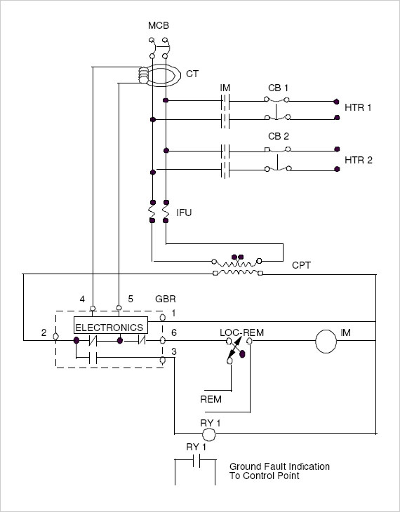

| |
|
| |
| Switch Heater Control Panels
200 / 400 Series |
| |
|  |
| |
| MCB |
MAIN CIRCUIT BREAKER |
| IM |
CONTACTOR |
| CB1 |
CIRCUIT BREAKER FOR HEATER 1 |
| CB2 |
CIRCUIT BREAKER FOR HEATER 2 |
| IFU |
CONTROL CIRCUIT FUSES |
| CPT |
CONTROL CIRCUIT TRANSFORMER |
| RY 1 |
GROUND FAULT INDICATION RELAY |
| GBR |
GROUND BREAK RELAY |
| CT |
GROUND BREAK CURRENT TRANSFORMER |
|
| |
| The 200 and 400 Series Switch Heater Control Panels are a standardized
component assembly of contractors, ground break equipment, circuit breakers,
transformers, relays, fuses and other devices mounted on fiberglass or wood
panel-boards to provide specified control functions for 200 and 400 voltage
A.C. switch heaters. |
| |
The two essential control functions are turning on and off the switch heater
and ground fault protection. Other functions include local heater on and
ground fault indication, ground fault test and reset buttons, circuit flow for
remote control and circuitry for indicating tripped ground fault at control
point, as are applicable. Other functions are provided as may be required for
particular applications. |
|
|
|